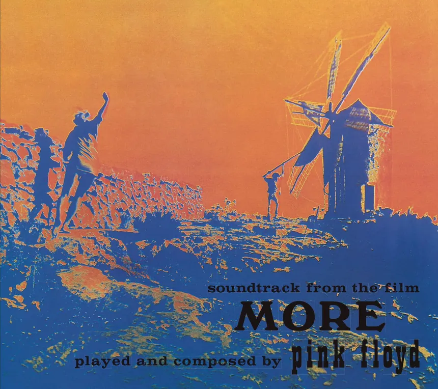
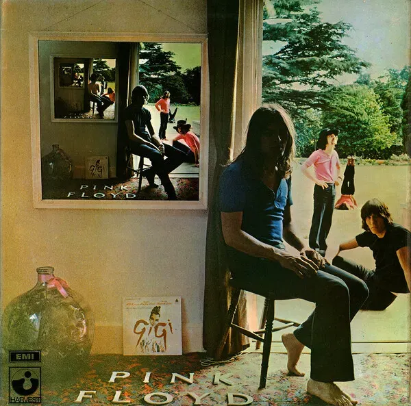
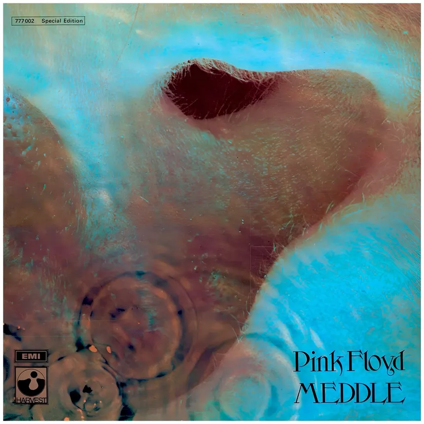
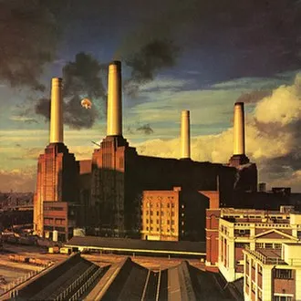

The Piper at the Gates of Dawn (1967)

Visão Geral
- Obra-prima psicodélica liderada por Syd Barrett. Repleto de fantasias, nonsense e texturas sonoras inventivas, é um dos pilares do rock psicodélico britânico — lançado no mesmo verão do Sgt. Pepper's dos Beatles. Barrett escreveu quase tudo.
- Lançado em 4 de Agosto de 1967
- Duração: 41 minutos e 52 segundos
Faixas
- Astronomy Domine
- Lucifer Sam
- Matilda Mother
- Flaming
- Pow R. Toc H.
- Take Up Thy Stethoscope and Walk
- Interstellar Overdrive
- The Gnome
- Chapter 24
- The Scarecrow
- Bike
A Saucerful of Secrets (1968)

Visão Geral
- Álbum de transição: último com participação de Syd Barrett (apenas em "Jugband Blues") e primeiro com David Gilmour. Mais sombrio e experimental, começa a esboçar o rock progressivo que a banda construiria na década seguinte.
- Lançado em 29 de Junho de 1968
- Duração: 38 minutos e 8 segundos
Faixas
- Let There Be More Light
- Remember a Day
- Set the Controls for the Heart of the Sun
- Corporal Clegg
- A Saucerful of Secrets
- See-Saw
- Jugband Blues
More (1969)

Visão Geral
- Trilha sonora do filme homônimo de Barbet Schroeder. Mistura folk acústico, rock direto e ambientes instrumentais. Álbum subestimado que demonstra a versatilidade da banda em seu período de transição criativa.
- Lançado em 27 de Junho de 1969
- Duração: 44 minutos e 58 segundos
Faixas
- Cirrus Minor
- The Nile Song
- Crying Song
- Up the Khyber
- Green Is the Colour
- Cymbaline
- Party Sequence
- Main Theme
- Ibiza Bar
- More Blues
- Quicksilver
- A Spanish Piece
- Dramatic Theme
Ummagumma (1969)

Visão Geral
- Álbum duplo experimental: o primeiro disco traz gravações ao vivo e o segundo apresenta composições solo de cada integrante. Uma curiosidade histórica que revela as personalidades musicais distintas de Waters, Wright, Gilmour e Mason.
- Lançado em 7 de Novembro de 1969
- Duração: 83 minutos e 11 segundos
Faixas
- Astronomy Domine (ao vivo)
- Careful with That Axe, Eugene
- Set the Controls for the Heart of the Sun
- A Saucerful of Secrets
- Sysyphus, Pts. 1–4
- Grantchester Meadows
- Several Species of Small Furry Animals...
- The Narrow Way, Pts. 1–3
- The Grand Vizier's Garden Party
Atom Heart Mother (1970)

Visão Geral
- Primeiro álbum a chegar ao topo das paradas britânicas. Abre com a suíte orquestral épica de 23 minutos que dá nome ao disco — com orquestra completa e coral. O lado B traz canções mais acessíveis como "If" e "Fat Old Sun".
- Lançado em 2 de Outubro de 1970
- Duração: 52 minutos e 11 segundos
Faixas
- Atom Heart Mother
- If
- Summer '68
- Fat Old Sun
- Alan's Psychedelic Breakfast
Meddle (1971)

Visão Geral
- O elo perdido entre os primeiros experimentos e o auge da banda. Encerra com "Echoes", suíte de 23 minutos que antecipa o som cinematográfico de The Dark Side of the Moon. Um dos discos mais amados pelos fãs.
- Lançado em 31 de Outubro de 1971
- Duração: 46 minutos e 47 segundos
Faixas
- One of These Days
- A Pillow of Winds
- Fearless
- San Tropez
- Seamus
- Echoes
Obscured by Clouds (1972)

Visão Geral
- Segunda trilha sonora para Barbet Schroeder ("La Vallée"). Som mais coeso e melódico do que "More", serve de prelúdio direto para The Dark Side of the Moon. "Childhood's End" e "Wots... Uh the Deal" são os destaques.
- Lançado em 2 de Junho de 1972
- Duração: 40 minutos e 4 segundos
Faixas
- Obscured by Clouds
- When You're In
- Burning Bridges
- The Gold It's in the...
- Wots... Uh the Deal
- Mudmen
- Childhood's End
- Free Four
- Stay
- Absolutely Curtains
The Dark Side of the Moon (1973)

Visão Geral
- Um dos álbuns mais vendidos da história, com mais de 45 milhões de cópias. Conceitual e sem interrupções, explora temas como tempo, loucura, ganância e morte com produção revolucionária de Alan Parsons. Ficou 937 semanas consecutivas na Billboard 200.
- Lançado em 1 de Março de 1973
- Duração: 42 minutos e 59 segundos
Faixas
- Speak to Me
- Breathe
- On the Run
- Time
- The Great Gig in the Sky
- Money
- Us and Them
- Any Colour You Like
- Brain Damage
- Eclipse
Wish You Were Here (1975)

Visão Geral
- Homenagem a Syd Barrett e crítica feroz à indústria musical. Dois movimentos de "Shine On You Crazy Diamond" enquadram três canções memoráveis. Unanimemente considerado um dos maiores álbuns do rock.
- Lançado em 12 de Setembro de 1975
- Duração: 44 minutos e 28 segundos
Faixas
- Shine On You Crazy Diamond (Pts. I–V)
- Welcome to the Machine
- Have a Cigar
- Wish You Were Here
- Shine On You Crazy Diamond (Pts. VI–IX)
Animals (1977)

Visão Geral
- Inspirado em "A Revolução dos Bichos" de George Orwell. Cães, porcos e ovelhas representam classes sociais numa crítica política intensa. Som mais pesado e agressivo, contemporâneo ao punk que explodiu no mesmo ano.
- Lançado em 21 de Janeiro de 1977
- Duração: 41 minutos e 27 segundos
Faixas
- Pigs on the Wing 1
- Dogs
- Pigs (Three Different Ones)
- Sheep
- Pigs on the Wing 2
The Wall (1979)

Visão Geral
- Obra-prima conceitual de Roger Waters sobre isolamento, trauma e alienação. Opera rock com "Another Brick in the Wall", "Comfortably Numb" e "Hey You". Um dos álbuns duplos mais vendidos da história; gerou o filme cult de Alan Parker em 1982.
- Lançado em 30 de Novembro de 1979
- Duração: 81 minutos e 8 segundos
Faixas
- In the Flesh?
- The Thin Ice
- Another Brick in the Wall, Pt. 1
- The Happiest Days of Our Lives
- Another Brick in the Wall, Pt. 2
- Mother
- Goodbye Blue Sky
- Empty Spaces
- Young Lust
- One of My Turns
- Don't Leave Me Now
- Another Brick in the Wall, Pt. 3
- Goodbye Cruel World
- Hey You
- Is There Anybody Out There?
- Nobody Home
- Vera
- Bring the Boys Back Home
- Comfortably Numb
- The Show Must Go On
- In the Flesh
- Run Like Hell
- Waiting for the Worms
- Stop
- The Trial
- Outside the Wall
The Final Cut (1983)

Visão Geral
- Praticamente um álbum solo de Roger Waters, em resposta emocional à Guerra das Malvinas. Intensamente pessoal e pacifista, foi o último antes de Waters deixar o grupo. Gilmour tinha papel mínimo; Richard Wright já havia saído da banda.
- Lançado em 21 de Março de 1983
- Duração: 43 minutos e 28 segundos
Faixas
- The Post War Dream
- Your Possible Pasts
- One of the Few
- When the Tigers Broke Free
- The Hero's Return
- The Gunner's Dream
- Paranoid Eyes
- Get Your Filthy Hands Off My Desert
- The Fletcher Memorial Home
- Southampton Dock
- The Final Cut
- Not Now John
- Two Suns in the Sunset
A Momentary Lapse of Reason (1987)

Visão Geral
- Primeiro álbum sem Roger Waters, liderado por David Gilmour. Mais comercial e orientado ao rock dos anos 80, gerou "Learning to Fly" e "On the Turning Away". Prova que a banda sobrevivia à saída de seu principal compositor.
- Lançado em 7 de Setembro de 1987
- Duração: 51 minutos e 14 segundos
Faixas
- Signs of Life
- Learning to Fly
- The Dogs of War
- One Slip
- On the Turning Away
- Yet Another Movie
- Round and Around
- A New Machine, Pt. 1
- Terminal Frost
- A New Machine, Pt. 2
- Sorrow
The Division Bell (1994)

Visão Geral
- Último álbum de estúdio com a formação clássica Gilmour–Wright–Mason. Explora temas de comunicação e silêncio. "High Hopes" e "Keep Talking" (com voz de Stephen Hawking) são os destaques. Wright tem papel criativo mais relevante do que em décadas.
- Lançado em 28 de Março de 1994
- Duração: 65 minutos e 8 segundos
Faixas
- Cluster One
- What Do You Want from Me
- Poles Apart
- Marooned
- A Great Day for Freedom
- Wearing the Inside Out
- Take It Back
- Coming Back to Life
- Keep Talking
- Lost for Words
- High Hopes
The Endless River (2014)

Visão Geral
- Álbum póstumo dedicado a Richard Wright, falecido em 2008. Construído com gravações instrumentais das sessões de The Division Bell (1993–94). Quase inteiramente instrumental, funciona como um epílogo melancólico de uma das maiores carreiras do rock.
- Lançado em 7 de Novembro de 2014
- Duração: 53 minutos e 20 segundos
Faixas
- Things Left Unsaid
- It's What We Do
- Ebb and Flow
- Sum
- Skins
- Unsung
- Anisina
- The Lost Art of Conversation
- On Noodle Street
- Night Light
- Allons-y (1)
- Autumn '68
- Allons-y (2)
- Talkin' Hawkin'
- Calling
- Eyes to Pearls
- Surfacing
- Louder Than Words